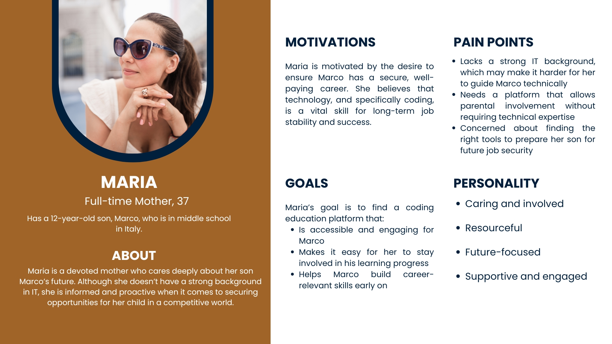
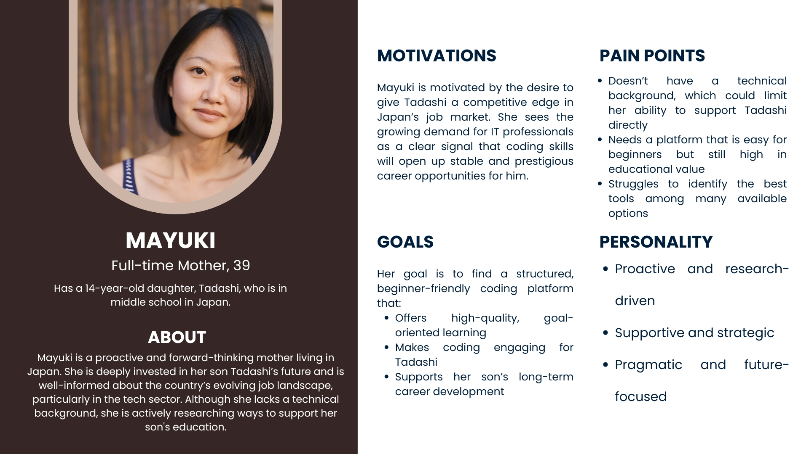
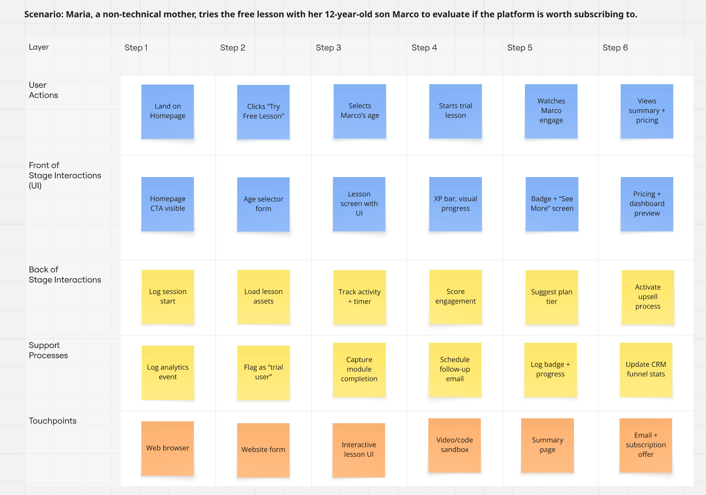
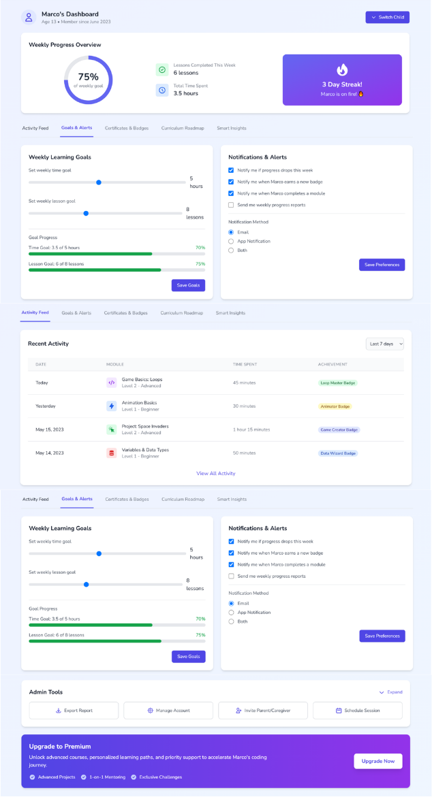
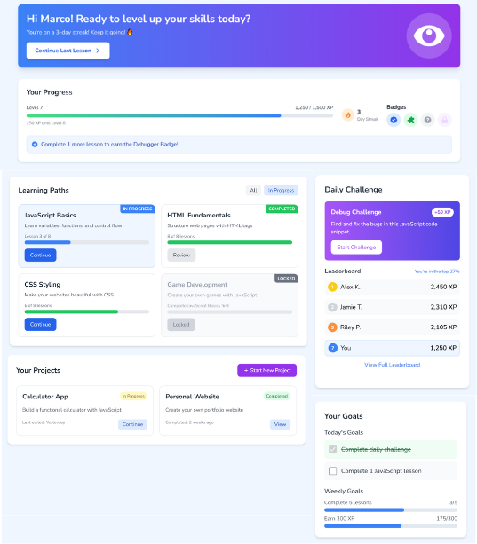

Case Study
CodeWise
An app that has to convince a distracted kid that coding is fun, and convince their skeptical parent it's worth paying for — using the exact same platform.
Caso di Studio
CodeWise
Un'app che deve convincere un bambino distratto che programmare è divertente, e convincere il suo genitore scettico che vale la pena pagarla — usando la stessa identica piattaforma.
The Brief
Two audiences, one screen, opposite needs
CodeWise teaches kids aged 10 to 16 to code. But a 12-year-old doesn't sign up for anything themselves, a parent does, and keeps paying for it every month after. The platform had to earn trust twice over: once from a child who'd rather be doing almost anything else, and once from a parent with no real way to verify any of it themselves.
The version I inherited hadn't resolved that tension. Navigation didn't reassure a parent they were making a good call, and nothing about the experience felt playful enough to hold a kid's attention past the first free lesson. It was one product trying to speak to two audiences who wanted almost opposite things from it.
Il Brief
Due pubblici, una sola schermata, esigenze opposte
CodeWise insegna a programmare a bambini tra i 10 e i 16 anni. Ma un bambino di 12 anni non si iscrive da solo, lo fa un genitore, che poi continua a pagare ogni mese. La piattaforma doveva guadagnarsi la fiducia due volte: quella di un bambino che preferirebbe fare quasi qualsiasi altra cosa, e quella di un genitore che non ha davvero modo di verificare nulla da solo.
La versione che ho ereditato non aveva risolto questa tensione. La navigazione non rassicurava il genitore di aver fatto la scelta giusta, e niente nell'esperienza sembrava abbastanza coinvolgente da trattenere l'attenzione di un bambino oltre la prima lezione gratuita. Era un unico prodotto che cercava di parlare a due pubblici che volevano quasi l'opposto l'uno dall'altro.
My Role
Researcher, then designer, then the person who drew every screen
I ran this project through three hats: UX researcher first, figuring out who we were actually designing for and what they each needed; then UX designer, turning that into a structure and a set of flows; then UI designer, giving the whole thing a face parents and kids could both live with.
The research came first because the brief's biggest risk wasn't visual, it was assuming "a parent" was one kind of person. I built three: Maria, an Italian mother with no technical background who just wants to see her son Marco is on track; Li, a data-driven father who wants numbers, not reassurance; and Mayuki, a strategic mother who wants a structured plan, not a stream of notifications. Three different relationships to the same worry, is this actually helping my kid.
Il Mio Ruolo
Ricercatrice, poi designer, poi chi ha disegnato ogni schermata
Ho portato avanti questo progetto attraverso tre ruoli: prima come UX researcher, per capire per chi stessimo davvero progettando e di cosa ognuno avesse bisogno; poi come UX designer, trasformando questo in una struttura e in una serie di flussi; infine come UI designer, dando all'insieme un volto con cui genitori e bambini potessero convivere entrambi.
La ricerca è arrivata prima perché il rischio più grande del brief non era visivo, era assumere che "un genitore" fosse un solo tipo di persona. Ne ho costruiti tre: Maria, una madre italiana senza background tecnico che vuole solo vedere che suo figlio Marco è sulla strada giusta; Li, un padre orientato ai dati che vuole numeri, non rassicurazioni; e Mayuki, una madre strategica che vuole un piano strutturato, non un flusso di notifiche. Tre relazioni diverse con la stessa preoccupazione: questa cosa sta davvero aiutando mio figlio?


The Process
Following one parent through one real scenario
Personas tell you who's using the product. Service blueprints tell you what actually has to happen, screen by screen and system by system, for that person to get what they came for. I mapped Maria's most important path in detail, landing on the homepage, trying a free lesson with her son, and deciding whether to subscribe, across every layer: what she sees, what the interface shows her, and what has to happen behind the scenes for that to work.
Doing this for more than one persona, Li's version tracks a father checking a dashboard for hard numbers, not a free trial, is what surfaced a pattern: the two of them needed almost entirely different UI at the same steps. That's what shaped the navigation decisions that came next.
Il Processo
Seguire un genitore attraverso uno scenario reale
Le personas dicono chi usa il prodotto. I service blueprint dicono cosa deve succedere davvero, schermata per schermata e sistema per sistema, perché quella persona ottenga ciò per cui è venuta. Ho mappato in dettaglio il percorso più importante di Maria, arrivare sulla homepage, provare una lezione gratuita con suo figlio, e decidere se abbonarsi, attraverso ogni livello: cosa vede, cosa le mostra l'interfaccia, e cosa deve succedere dietro le quinte perché tutto funzioni.
Farlo per più di una persona, la versione di Li segue un padre che controlla una dashboard in cerca di numeri concreti, non una prova gratuita, è quello che ha fatto emergere uno schema: i due avevano bisogno di UI quasi completamente diverse agli stessi passaggi. È questo che ha guidato le decisioni di navigazione arrivate dopo.

The Redesign
Three ways to hold two audiences at once
01 Navigation that speaks two languages
Parents and kids needed to see completely different vocabulary in the same information architecture. Parent-facing labels stayed plain and outcome-focused, "Track Progress," "Try a Free Lesson." Kid-facing labels went playful, "Level Up," "Unlock Projects." Same structure underneath, two very different voices on top.
02 A dashboard a non-technical parent can actually trust
None of the three personas had a technical background, and all three wanted a fast, honest read on whether their kid was actually learning. I consolidated the dashboard around a small number of visual indicators, a weekly progress ring, a streak counter, a simple goals panel, instead of a wall of stats, and added clean switching between children's accounts for parents managing more than one.
Il Redesign
Tre modi per parlare a due pubblici insieme
01 Una navigazione che parla due lingue
Genitori e bambini dovevano vedere un vocabolario completamente diverso nella stessa architettura dell'informazione. Le etichette per i genitori sono rimaste semplici e orientate al risultato — "Track Progress," "Try a Free Lesson." Quelle per i bambini sono diventate giocose — "Level Up," "Unlock Projects." Stessa struttura sotto, due voci molto diverse sopra.
02 Una dashboard di cui un genitore non tecnico può davvero fidarsi
Nessuna delle tre personas aveva un background tecnico, e tutte e tre volevano una lettura rapida e onesta di quanto il figlio stesse davvero imparando. Ho consolidato la dashboard attorno a un numero ridotto di indicatori visivi — un anello di progresso settimanale, un contatore di streak, un pannello obiettivi semplice — invece di un muro di statistiche, e ho aggiunto un cambio account fluido per i genitori con più di un figlio.

03 Progress that feels like a game, not a report card
For the kids' side, the job was the opposite: make progress feel earned, not administered. XP bars, badges, and short "you just unlocked..." moments turn finishing a lesson into a small win instead of a checkbox.
03 Un progresso che sembra un gioco, non una pagella
Per il lato bambini, il compito era l'opposto: far sembrare il progresso guadagnato, non amministrato. Barre XP, badge, e piccoli momenti "hai appena sbloccato..." trasformano il completare una lezione in una piccola vittoria invece che in una casella da spuntare.

The Result
A platform that works for the person paying and the person learning
The redesign closed the gap between the two audiences instead of picking one. Parents got a dashboard simple enough to trust at a glance; kids got an experience that made finishing a lesson feel like winning something.
Feedback pointed to the same two things again and again: the simplified dashboards worked for every type of parent I'd designed for, not just the tech-comfortable ones, and the flexible subscription options landed well with people who'd been unsure about committing.
Il Risultato
Una piattaforma che funziona per chi paga e per chi impara
Il redesign ha chiuso il divario tra i due pubblici invece di scegliere uno dei due. I genitori hanno ottenuto una dashboard semplice da leggere e di cui fidarsi a colpo d'occhio; i bambini un'esperienza che li premiava per essersi presentati.
I riscontri hanno indicato sempre le stesse due cose: le dashboard semplificate funzionavano per ogni tipo di genitore avessi progettato, non solo per quelli più a loro agio con la tecnologia, e le opzioni di abbonamento flessibili sono piaciute a chi non era sicuro di volersi impegnare.
Looking Back
What I'd take further
If I kept building this, gamification is where I'd spend the most time, badges and streaks are an easy first pass, but keeping them motivating instead of just decorative over months of real use needs more testing than a first release allows. I'd also want to take the experience to mobile properly, since that's where most kids in this age range actually are.
Uno Sguardo Indietro
Cosa approfondirei ulteriormente
Se continuassi a costruire questo prodotto, la gamification è dove investirei più tempo, badge e streak sono una prima versione facile, ma mantenerli motivanti e non solo decorativi nel corso di mesi di utilizzo reale richiede più test di quanti un primo rilascio permetta. Vorrei anche portare l'esperienza correttamente su mobile, visto che è lì che si trova davvero la maggior parte dei bambini in questa fascia d'età.